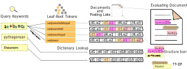

PyA0: A Python Toolkit for Accessible
Math-Aware Search
Wei Zhong and Jimmy Lin
University of Waterloo, Ontario, Canada
Use Case
Internal Picture
Accessibility?
Things you might need to do for adding effective math-awareness:Getting Started
$ pip install pya0==0.2.9
Tokenizing Math Markups
What if we want to tokenize $\boxed{ \beta \in \mathbb{R} }$ ?
[(260, 'VAR', 'beta'), (271, 'INNI', 'in'), (260, 'VAR', "blackboard-bold`R'")]
Parsing
#7 GTLS equal
#8 ADD plus
#9 SIGN pos
#10 HANGER hanger
#11 BASE base
#1 VAR normal`a'
#12 SUPSCRIPT supscript
#2 NUM `2'
#13 SIGN pos
#14 HANGER hanger
#15 BASE base
#3 VAR normal`b'
#16 SUPSCRIPT supscript
#4 NUM `2'
#17 HANGER hanger
#18 BASE base
#5 VAR normal`c'
#19 SUPSCRIPT supscript
#6 NUM `2'
Search
Search Results
Index directory: /root/.cache/pya0/indexes/mnt-mse-ecir2020.35bcbc0f144ff4dd8baf35d439a6cc28
{
"ret_code": 0,
"ret_str": "Successful",
"tot_pages": 1,
"hits": [
{
"docid": 407825,
"score": 79.334,
"title": "modulo division of inverse numbers",
"url": "http://math.stackexchange.com/questions/705441/modulo-division-of-inverse-numbers",
"snippet": "modulo division of inverse numbers I am working on some modulo arithmetic and I do not seem to understand why [imath]28^{-1} (mod59)= 19 (mod59)=55[/imath] is a ... .0035 For example, [imat
h]\\;28\\cdot 19=9\\cdot 29\\color{red}{+1}\\;[/imath] ....that's why. en.wikipedia.org/wiki/Modular_multiplicative_inverse In modular arithmetic, the multiplicative inverse is generally
not defined as [imath]x^{-1} = \\frac{1}{x}[/imath]. It's instead generally defined as an integer such that [imath]x\\cdot x^{-1} \\equiv 1 \\mod{n}[/imath]. For example, the multiplicative i
nverse of [imath]3[/imath] modulo [imath]5[/imath] would be [imath]2[/imath], because [imath]3\\cdot 2 = 6 \\equiv 1 \\mod 5[/imath]. In your case, [imath]19[/imath] is the multiplicative inverse of [imat
h]28[/imath] modulo [imath]59[/imath] because [imath]28\\cdot19 = 532 \\equiv 1 \\mod 59[/imath]. Actually, most people would say that [imath]x^{-1}[/imath] and [imath]1/x[/imath] are the same thing, just symbols meaning \"the mul
tiplicative inverse of [imath]x[/imath]\". It is very common to see modular inverses written as fractions in the literature. ... "
},
...
Reproduce Results
Performance
Additional Features